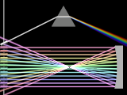

{kind=link}
{kind=link}

A library module from the Persistence of Vision Ray Tracer (POV-Ray) Object Collection.
 Sometimes, it is desirable to know the behavior of light refracting through or reflecting off a transparent or specular object before incorporating the object into a scene. Examples could be a gem cut or a lens system. BeamTest provides for optical testing of such objects by shooting beams of light at two-dimensional slices of objects.
The italicized nnnnnn in some of the file names represents the 6-digit number that is in the name of the .zip file.
| Key Files | |
|---|---|
| File | Description |
beamtest.html |
The user manual (this document) |
beamtest.inc |
The BeamTest software |
beamtest.jpg |
Sample output |
beamtest.pov |
A demonstration scene description file |
beamtest_spectral.jpg |
Spectrally rendered sample output |
beamtest_spectral.pov |
A scene description file demonstrating use with SpectralRender |
READMEnnnnnn.html |
Important information about using the POV-Ray Object Collection |
| Other Files | |
| File | Description |
beamtest.css |
A file used by the user manual |
beamtest_description.txt |
A brief description of BeamTest |
beamtest_keywords.txt |
A list of keywords |
beamtest_prereqs.txt |
Prerequisites |
beamtest_thumbnail.png |
An illustration for the user manual |
cc-LGPL-a.png |
Administrative files |
Versionnnnnnn.js |
|
Note: The file beamtest_cc-lgpl.png is no longer used.
BeamTest requires POV-Ray version 3.6 or later. POV-Ray 3.7 or later is recommended for the most accurate dispersion.
The demo scene beamtest_spectral.pov requires SpectralRender and Lightsys IV (available under other licenses), and POV-Ray 3.7 or later. (These are not prerequisites for general use of the module.) Only two files from Lightsys are actually required; if you do not wish to download the entire package, these two files can be downloaded at the SpectralRender page [sic], in the prerequisites section.
All file names in this module and all global and local identifiers defined in beamtest.inc comply fully with the Object Collection naming standards, as revised August 2008 and proposed August 2012. The prefixes for this module are “beamtest” and “beam,” including any uppercase and lowercase variants; to avoid conflicts, do not declare identifiers that start with these prefixes plus an underscore.
Include this file once prior to using any of the macros:
#include "beamtest.inc"
Including the file more than once is harmless, though unnecessary.
A camera is set up automatically.
Light fixtures are arrayed along the left side of the image (with the x direction being toward the right). The user chooses the height, aiming, and color of the lights.
The objects to be tested should be placed on the right (with the x direction being toward the right), with the slice to be tested along the x-y plane. All tested objects must be declared as a photons { target }; in addition, refractive objects must be declared hollow.
In POV-RAY 3.7.0, spurious unrefracted light beams are often traced concurrently with refracted beams. This can be avoided by disregarding the POV-Ray recommendation to set collect off in the photons{} block of the refracting object.
So that objects in the scene may be visible, an environmental light is created automatically. This light does not shoot photons or interact with media. To accommodate spectral rendering, the color of this light may be set by the user.
The following parameters may be modified by declaring them prior to including beamtest.inc.
| Parameter | Type | Description | Default |
|---|---|---|---|
Beam_c_lighting |
color | The color of the environmental lighting. | rgb 1 |
Beam_extinction |
float | Scattering extinction of the environmental media. This value may need to be increased if Beam_image_depth is increased. A practical maximum appears to be 0.1. |
0.0 |
Beam_field_of_view |
float | Camera angle, in degrees. If set to 0, the orthographic camera will be used. | 0.0 (changed from previous versions) |
Beam_fixture_length |
float | Length of each light fixture, in POV units | 0.6 |
Beam_fixture_radius |
float | Radius of each light fixture, in POV units | 0.1 |
Beam_fixture_shadow |
float/Boolean | Whether or not the light fixtures cast shadows. Set this parameter to no if the fixtures interfere with the light beams. |
yes |
Beam_fixture_x |
float | Horizontal position of the light fixtures | -5.0 |
Beam_image_depth |
float | Depth (in the z-direction) of the environmental media, in POV units. Set a large value if a test object deflects light outside the x-y plane. (Warning: This may slow render times and oversaturate deflected light beams.) | Slightly more than twice Beam_radius |
Beam_image_height |
float | Height of the image, in POV units. Normally, this parameter is calculated automatically, but the user may set it to force a certain aspect ratio. | Derived from Beam_image_width and the image dimensions, in pixels. |
Beam_image_width |
float | Width of the image, in POV units | 32/3 |
Beam_max_trace |
float | Maximum trace level | 15 |
Beam_photons |
float |
|
0.005 |
Beam_photons_media |
float | Maximum media photons (media max_steps) |
200 |
Beam_radius |
float | Radius of each light beam, including the falloff, in POV units | 0.05 |
Beam_umbra |
float | The width of the bright core of each light beam, i.e., without the falloff, as a fraction of the total diameter | 0.5 |
A light beam with fixture, aimed by angle.
Height:
Color:
Angle:
A light beam with fixture, aimed by mathematical slope.
Height:
Color:
Slope:
A light beam with fixture, aimed at a target point.
Height:
Color:
Target:
| Identifier | Type | Description | Value |
|---|---|---|---|
Beam_media |
media | The media used for the test environment | |
BEAMTEST_VERSION |
float | The BeamTest version, in case the scene file needs that information. | 1.2 |
Any identifiers in beamtest.inc that are not documented in this manual are considered “private” or “protected,” and are subject to change or elimination in a future update.
| Version | Date | Notes |
|---|---|---|
| N/A | November 21, 2007 |
|
| 1.0 | July 30, 2008 |
|
| 1.0.1 | August 4, 2008 |
|
| 1.1 | September 1, 2008 |
|
| 1.1.1 | June 30, 2012 |
|
| 1.2 | November 1, 2014 |
|
Many thanks to Matthew Goulet, Juha Nieminen (who will recognize his parabolic mirror), and William F. Pokorny.